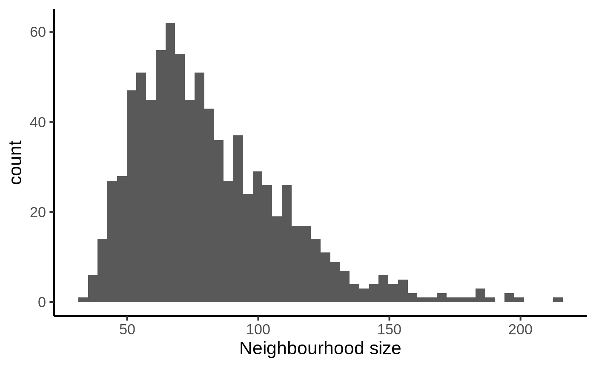
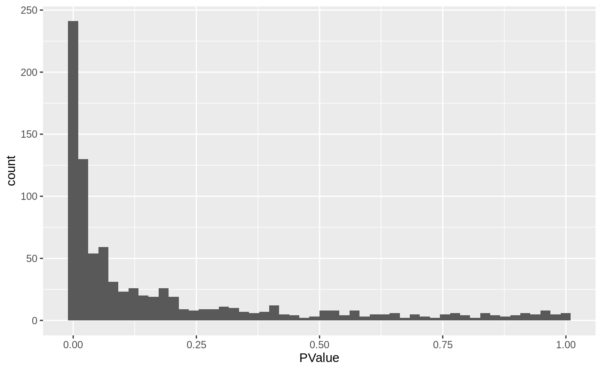
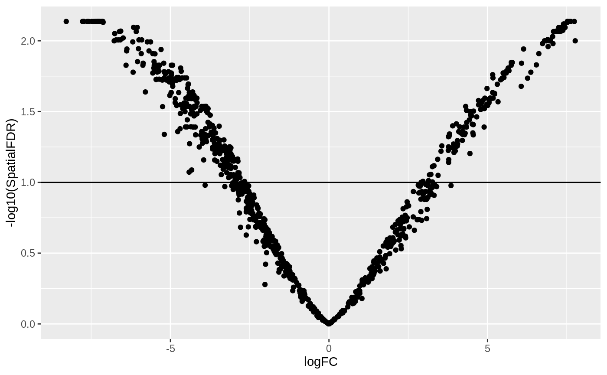
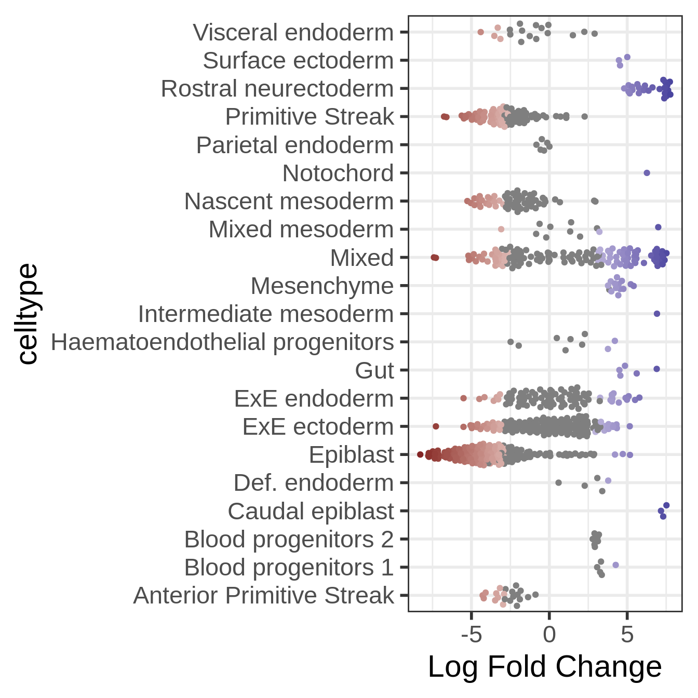

Differential abundance testing with Milo - Mouse gastrulation example
Emma Dann
Mike Morgan
milo_gastrulation.RmdLoad data
For this vignette we will use the mouse gastrulation single-cell data from Pijuan-Sala et al. 2019. The dataset can be downloaded as a SingleCellExperiment object from the MouseGastrulationData package on Bioconductor. To make computations faster, here we will download just a subset of samples, 4 samples at stage E7 and 4 samples at stage E7.5.
This dataset has already been pre-processed and contains a pca.corrected dimensionality reduction, which was built after batch correction using fastMNN.
library(MouseGastrulationData) select_samples <- c(2, 3, 6, 15, # 4, 19, 10, 14, 20, 30 #31, 32 ) embryo_data = EmbryoAtlasData(samples = select_samples)
## Warning: `select_()` is deprecated as of dplyr 0.7.0.
## Please use `select()` instead.
## This warning is displayed once every 8 hours.
## Call `lifecycle::last_warnings()` to see where this warning was generated.## Warning: `filter_()` is deprecated as of dplyr 0.7.0.
## Please use `filter()` instead.
## See vignette('programming') for more help
## This warning is displayed once every 8 hours.
## Call `lifecycle::last_warnings()` to see where this warning was generated.embryo_data## class: SingleCellExperiment
## dim: 29452 14679
## metadata(0):
## assays(1): counts
## rownames(29452): ENSMUSG00000051951 ENSMUSG00000089699 ...
## ENSMUSG00000096730 ENSMUSG00000095742
## rowData names(2): ENSEMBL SYMBOL
## colnames(14679): cell_361 cell_362 ... cell_107079 cell_107080
## colData names(16): cell barcode ... celltype colour
## reducedDimNames(2): pca.corrected umap
## spikeNames(0):
## altExpNames(0):Visualize the data
We recompute PCA and UMAP embedding for this subset of cells to visualize the data.
embryo_data <- embryo_data[,apply(reducedDim(embryo_data, "pca.corrected"), 1, function(x) !all(is.na(x)))] embryo_data <- runUMAP(embryo_data, dimred = "pca.corrected", name = 'umap') plotReducedDim(embryo_data, colour_by="stage", dimred = "umap")

We will test for significant differences in abundance of cells between these stages of development, and the associated gene signatures.
Differential abundance testing
Create a Milo object
For differential abundance analysis on graph neighbourhoods we first construct a Milo object. This extends the SingleCellExperiment class to store information about neighbourhoods on the KNN graph.
embryo_milo <- Milo(embryo_data) embryo_milo
## class: Milo
## dim: 29452 13002
## metadata(0):
## assays(1): counts
## rownames(29452): ENSMUSG00000051951 ENSMUSG00000089699 ...
## ENSMUSG00000096730 ENSMUSG00000095742
## rowData names(2): ENSEMBL SYMBOL
## colnames(13002): cell_361 cell_362 ... cell_107079 cell_107080
## colData names(16): cell barcode ... celltype colour
## reducedDimNames(2): pca.corrected umap
## spikeNames(0):
## altExpNames(0):
## nhoods dimensions(1): 0
## nhoodCounts dimensions(2): 1 1
## nhoodDistances dimension(1): 0
## graph names(0):
## nhoodIndex names(1): 0
## nhoodExpression dimension(2): 1 1
## nhoodReducedDim names(0):
## nhoodGraph names(0):
## nhoodAdjacency dimension(0):Construct KNN graph
We need to add the KNN graph to the Milo object. This is stored in the graph slot, in igraph format. The miloR package includes functionality to build and store the graph from the PCA dimensions stored in the reducedDim slot. In this case, we specify that we want to build the graph from the MNN corrected PCA dimensions.
embryo_milo <- buildGraph(embryo_milo, k = 30, d = 30, reduced.dim = "pca.corrected")
Alternatively, one can add a precomputed KNN graph (for example constructed with Seurat or scanpy) to the graph slot using the adjacency matrix, through the helper function buildFromAdjacency.
Defining representative neighbourhoods on the KNN graph
We define the neighbourhood of a cell, the index, as the group of cells connected by an edge in the KNN graph to the index cell. For efficiency, we don’t test for DA in the neighbourhood of every cell, but we sample as indices a subset of representative cells, using a KNN sampling algorithm used by Gut et al. 2015.
For sampling you need to define a few parameters:
-
prop: the proportion of cells to randomly sample to start with (usually 0.1 - 0.2 is sufficient) -
k: the k to use for KNN refinement (we recommend using the same k used for KNN graph building) -
d: the number of reduced dimensions to use for KNN refinement (we recommend using the same d used for KNN graph building) -
refined: indicates whether you want to use the sampling refinement algorith, or just pick cells at random. The default and recommended way to go is to use refinement. The only situation in which you might consider usingrandominstead, is if you have batch corrected your data with a graph based correction algorithm, such as BBKNN, but the results of DA testing will be suboptimal.
embryo_milo <- makeNhoods(embryo_milo, prop = 0.1, k = 30, d=30, refined = TRUE, reduced_dims = "pca.corrected")
Once we have defined neighbourhoods, it’s good to take a look at how big the neighbourhoods are (i.e. how many cells form each neighbourhood). This affects the power of DA testing. We can check this out using the plotNhoodSizeHist function. Empirically, we found it’s best to have a distribution peaking above 20. Otherwise you might consider rerunning makeNhoods increasing k and/or prop.
plotNhoodSizeHist(embryo_milo)

Counting cells in neighbourhoods
Milo leverages the variation in cell numbers between replicates for the same experimental condition to test for differential abundance. Therefore we have to count how many cells from each sample are in each neighbourhood. We need to use the cell metadata and specify which column contains the sample information.
embryo_milo <- countCells(embryo_milo, meta.data = data.frame(colData(embryo_milo)), sample="sample")
This adds to the Milo object a \(n \times m\) matrix, where \(n\) is the number of neighbourhoods and \(m\) is the number of experimental samples. Values indicate the number of cells from each sample counted in a neighbourhood. This count matrix will be used for DA testing.
head(nhoodCounts(embryo_milo))
## 6 x 8 sparse Matrix of class "dgCMatrix"
## 2 3 6 15 10 14 20 30
## 1 . 2 22 7 39 1 12 55
## 2 . 1 12 24 73 16 3 53
## 3 7 6 20 . . . 13 3
## 4 1 6 34 14 6 6 30 30
## 5 8 11 38 1 . 2 19 .
## 6 . . 3 8 7 5 2 29Defining experimental design
Now we are all set to test for differential abundance in neighbourhoods. We implement this hypothesis testing in a generalized linear model (GLM) framework, specifically using the Negative Binomial GLM implementation in edgeR.
We first need to think about our experimental design. The design matrix should match each sample to the experimental condition of interest for DA testing. In this case, we want to detect DA between embryonic stages, stored in the stage column of the dataset colData. We also include the sequencing.batch column in the design matrix. This represents a known technical covariate that we want to account for in DA testing.
embryo_design <- data.frame(colData(embryo_milo))[,c("sample", "stage", "sequencing.batch")] ## Convert batch info from integer to factor embryo_design$sequencing.batch <- as.factor(embryo_design$sequencing.batch) embryo_design <- distinct(embryo_design) rownames(embryo_design) <- embryo_design$sample embryo_design
## sample stage sequencing.batch
## 2 2 E7.5 1
## 3 3 E7.5 1
## 6 6 E7.5 1
## 15 15 E7.0 2
## 10 10 E7.0 1
## 14 14 E7.0 2
## 20 20 E7.5 2
## 30 30 E7.0 3Computing neighbourhood connectivity
Milo uses an adaptation of the Spatial FDR correction introduced by cydar, which accounts for the overlap between neighbourhoods. Specifically, each hypothesis test P-value is weighted by the reciprocal of the kth nearest neighbour distance. To use this statistic we first need to store the distances between nearest neighbors in the Milo object. This is done by the calcNhoodDistance function (N.B. this step is the most time consuming of the analysis workflow and might take a couple of minutes for large datasets).
embryo_milo <- calcNhoodDistance(embryo_milo, d=30, reduced.dim = "pca.corrected")
Testing
Now we can do the DA test, explicitly defining our experimental design. In this case, we want to dest for differences between experimental stages, while accounting for the variability between technical batches (You can find more info on how to use formulas to define a testing design in R here)
da_results <- testNhoods(embryo_milo, design = ~ sequencing.batch + stage, design.df = embryo_design)
This calculates a Fold-change and corrected P-value for each neighbourhood, which indicates wheather there is significant differential abundance between developmental stages.
## logFC logCPM F PValue FDR Nhood SpatialFDR
## 45 -7.481702 19.97088 13.94271 0.0001914740 0.008423267 45 0.007301757
## 78 -8.286835 20.48252 14.97000 0.0001112280 0.008423267 78 0.007301757
## 91 -7.772064 20.03656 14.33882 0.0001552522 0.008423267 91 0.007301757
## 95 7.521388 19.68571 13.67331 0.0002208687 0.008423267 95 0.007301757
## 198 -7.579592 19.99991 14.05889 0.0001800453 0.008423267 198 0.007301757
## 274 -7.623243 19.86048 13.95762 0.0001899676 0.008423267 274 0.007301757Inspecting DA testing results
We can start inspecting the results of our DA analysis from a couple of standard diagnostic plots. We first inspect the distribution of uncorrected P values, to verify that the test was balanced.
ggplot(da_results, aes(PValue)) + geom_histogram(bins=50)

Then we visualize the test results with a volcano plot (remember that each point here represents a neighbourhood, not a cell).
ggplot(da_results, aes(logFC, -log10(SpatialFDR))) + geom_point() + geom_hline(yintercept = 1) ## Mark significance threshold (10% FDR)

Looks like we have detected several neighbourhoods were there is a significant difference in cell abundances between developmental stages.
To visualize DA results relating them to the embedding of single cells, we can build an abstracted graph of neighbourhoods that we can superimpose on the single-cell embedding. Here each node represents a neighbourhood, while edges indicate how many cells two neighbourhoods have in common. Here the layout of nodes is determined by the position of the index cell in the UMAP embedding of all single-cells. The neighbourhoods displaying singificant DA are colored by their log-Fold Change.
embryo_milo <- buildNhoodGraph(embryo_milo) ## Plot single-cell UMAP umap_pl <- plotReducedDim(embryo_milo, dimred = "umap", colour_by="celltype", text_by = "celltype", text_size = 3) + guides(fill="none") ## Plot neighbourhood graph nh_graph_pl <- plotNhoodGraphDA(embryo_milo, da_results, layout="umap",alpha=0.05) umap_pl + nh_graph_pl + plot_layout(guides="collect")

We might also be interested in visualizing wheather DA is particularly evident in certain cell types. To do this, we assign a cell type label to each neighbourhood by finding the most abundant cell type within cells in each neighbourhood. We can label neighbourhoods in the results data.frame using the function annotateNhoods. This also saves the fraction of cells harbouring the label.
da_results <- annotateNhoods(embryo_milo, da_results, coldata_col = "celltype") head(da_results)
## logFC logCPM F PValue FDR Nhood SpatialFDR
## 1 -0.6106328 20.42087 0.1788746 0.672368256 0.73556076 1 0.73343784
## 2 -3.4251846 20.79253 4.5355029 0.033268444 0.07663154 2 0.07569422
## 3 6.6199781 19.28856 10.5760794 0.001156497 0.01284465 3 0.01232507
## 4 1.3986635 20.35858 0.7999356 0.371174279 0.45256305 4 0.45113575
## 5 4.5521075 19.83243 6.4076675 0.011406385 0.03999106 5 0.03912235
## 6 -2.1349494 19.30941 2.2261867 0.135778701 0.20863903 6 0.20738645
## celltype celltype_fraction
## 1 Epiblast 0.9927536
## 2 ExE ectoderm 1.0000000
## 3 Rostral neurectoderm 0.8163265
## 4 Mixed mesoderm 0.8031496
## 5 Mesenchyme 0.9873418
## 6 Anterior Primitive Streak 0.9814815While neighbourhoods tend to be homogeneous, we can define a threshold for celltype_fraction to exclude neighbourhoods that are a mix of cell types.
ggplot(da_results, aes(celltype_fraction)) + geom_histogram(bins=50)

da_results$celltype <- ifelse(da_results$celltype_fraction < 0.7, "Mixed", da_results$celltype)
Now we can visualize the distribution of DA Fold Changes in different cell types
plotDAbeeswarm(da_results, group.by = "celltype")

This is already quite informative: we can see that certain early development cell types, such as epiblast and primitive streak, are enriched in the earliest time stage, while others are enriched later in development, such as ectoderm cells. Interestingly, we also see plenty of DA neighbourhood with a mixed label. This could indicate that transitional states show changes in abundance in time.
Identifying signatures of DA subpopulations
Once we have identified neighbourhoods with significant DA, we might be interested in learning more about the gene expression signatures that define these subpopulations. Here the analyst might get creative, depending on the specific characteristics of their dataset and the biological question of interest. In the miloR package, we provide functionality to explore neighbourhood markers through the function findNhoodMarkers. This groups significantly DA neighbourhoods that show concordant Fold-Change and performs a test for differential expression between cells in those neighbourhoods.
In practice, it might be convenient to subset a selected number of neighbourhoods of interest for gene-level downstream analysis. For the sake of demonstration, here we focus on identifying signatures of DA subpopulations in the endoderm development lineage.
logcounts(embryo_milo) <- log1p(counts(embryo_milo)) dge_smp <- findNhoodMarkers(embryo_milo, da_results, assay = "counts", gene.offset = FALSE, da.fdr = 0.1, aggregate.samples = TRUE, sample_col = "sample", subset.nhoods = da_results$celltype %in% c("Anterior Primitive Streak", "Def. endoderm", "Gut", "Visceral endoderm") ) head(dge_smp)
## logFC_1 adj.P.Val_1 logFC_2 adj.P.Val_2 logFC_3
## ENSMUSG00000051951 0.00000000 1 -1.281371e-15 1 0.0000000
## ENSMUSG00000089699 0.00000000 1 -1.281371e-15 1 0.0000000
## ENSMUSG00000102343 0.00000000 1 -1.281371e-15 1 0.0000000
## ENSMUSG00000025900 0.00000000 1 -1.281371e-15 1 0.0000000
## ENSMUSG00000025902 0.01878518 1 4.214069e-01 1 -0.4762632
## ENSMUSG00000104328 0.00000000 1 -1.281371e-15 1 0.0000000
## adj.P.Val_3 GeneID
## ENSMUSG00000051951 1 ENSMUSG00000051951
## ENSMUSG00000089699 1 ENSMUSG00000089699
## ENSMUSG00000102343 1 ENSMUSG00000102343
## ENSMUSG00000025900 1 ENSMUSG00000025900
## ENSMUSG00000025902 1 ENSMUSG00000025902
## ENSMUSG00000104328 1 ENSMUSG00000104328This identifies n marker genes at FDR 10% that distinguish two main groups within the epiblast neighbourhoods, one significantly depleted in the early stage and one significantly enriched. We can visualize expression of the detected marker genes using the function plotNhoodExpressionDA. This shows the average expression in each neighbourhood, ranked by log-Fold Change in the DA test. Note that the gene x nhood expression matrix can be pre-computed and stored using the calcNhoodExpression function, to avoid repeating the computation every time you need to plot.
In this case we mainly identified negative markers of the epiblast neighbourhoods enriched with age.
markers <- dge_smp[which(dge_smp$adj.P.Val_1 < 0.1 ), "GeneID"] logcounts(embryo_milo) <- log1p(counts(embryo_milo)) embryo_milo <- calcNhoodExpression(embryo_milo, subset.row=markers) plotNhoodExpressionDA(embryo_milo, da_results, features = markers, subset.nhoods = da_results$celltype %in% c("Anterior Primitive Streak", "Def. endoderm", "Gut", "Visceral endoderm"), assay="logcounts", scale_to_1 = TRUE, cluster_features = TRUE )

Session Info
## R version 3.6.3 (2020-02-29)
## Platform: x86_64-pc-linux-gnu (64-bit)
## Running under: Ubuntu 18.04.3 LTS
##
## Matrix products: default
## BLAS: /usr/lib/x86_64-linux-gnu/blas/libblas.so.3.7.1
## LAPACK: /usr/lib/x86_64-linux-gnu/openblas/liblapack.so.3
##
## locale:
## [1] LC_CTYPE=en_US.UTF-8 LC_NUMERIC=C
## [3] LC_TIME=en_US.UTF-8 LC_COLLATE=en_US.UTF-8
## [5] LC_MONETARY=en_US.UTF-8 LC_MESSAGES=en_US.UTF-8
## [7] LC_PAPER=en_US.UTF-8 LC_NAME=C
## [9] LC_ADDRESS=C LC_TELEPHONE=C
## [11] LC_MEASUREMENT=en_US.UTF-8 LC_IDENTIFICATION=C
##
## attached base packages:
## [1] parallel stats4 stats graphics grDevices utils datasets
## [8] methods base
##
## other attached packages:
## [1] MouseGastrulationData_1.0.0 patchwork_1.0.1
## [3] dplyr_1.0.2 scater_1.14.6
## [5] ggplot2_3.3.2 SingleCellExperiment_1.8.0
## [7] SummarizedExperiment_1.16.1 DelayedArray_0.12.3
## [9] BiocParallel_1.20.1 matrixStats_0.56.0
## [11] Biobase_2.46.0 GenomicRanges_1.38.0
## [13] GenomeInfoDb_1.22.1 IRanges_2.20.2
## [15] S4Vectors_0.24.4 BiocGenerics_0.32.0
## [17] miloR_0.1.0 edgeR_3.28.1
## [19] limma_3.42.2 BiocStyle_2.14.4
##
## loaded via a namespace (and not attached):
## [1] ggbeeswarm_0.6.0 colorspace_1.4-1
## [3] ellipsis_0.3.1 rprojroot_1.3-2
## [5] XVector_0.26.0 BiocNeighbors_1.4.2
## [7] fs_1.5.0 rstudioapi_0.11
## [9] farver_2.0.3 graphlayouts_0.7.0
## [11] ggrepel_0.8.2 bit64_4.0.2
## [13] AnnotationDbi_1.48.0 interactiveDisplayBase_1.24.0
## [15] splines_3.6.3 codetools_0.2-16
## [17] knitr_1.30 polyclip_1.10-0
## [19] dbplyr_1.4.4 uwot_0.1.8
## [21] ggforce_0.3.2 shiny_1.5.0
## [23] BiocManager_1.30.10 compiler_3.6.3
## [25] httr_1.4.2 backports_1.1.9
## [27] fastmap_1.0.1 assertthat_0.2.1
## [29] Matrix_1.2-18 later_1.1.0.1
## [31] tweenr_1.0.1 BiocSingular_1.2.2
## [33] htmltools_0.5.0 tools_3.6.3
## [35] rsvd_1.0.3 igraph_1.2.5
## [37] gtable_0.3.0 glue_1.4.1
## [39] GenomeInfoDbData_1.2.2 rappdirs_0.3.1
## [41] Rcpp_1.0.5 pkgdown_1.5.1
## [43] vctrs_0.3.2 ExperimentHub_1.12.0
## [45] DelayedMatrixStats_1.8.0 ggraph_2.0.3
## [47] xfun_0.19 stringr_1.4.0
## [49] mime_0.9 lifecycle_0.2.0
## [51] irlba_2.3.3 gtools_3.8.2
## [53] statmod_1.4.34 AnnotationHub_2.18.0
## [55] zlibbioc_1.32.0 MASS_7.3-51.5
## [57] scales_1.1.1 tidygraph_1.2.0
## [59] promises_1.1.1 yaml_2.2.1
## [61] curl_4.3 memoise_1.1.0
## [63] gridExtra_2.3 stringi_1.4.6
## [65] RSQLite_2.2.0 BiocVersion_3.10.1
## [67] desc_1.2.0 rlang_0.4.7
## [69] pkgconfig_2.0.3 bitops_1.0-6
## [71] evaluate_0.14 lattice_0.20-40
## [73] purrr_0.3.4 labeling_0.3
## [75] cowplot_1.0.0 bit_4.0.4
## [77] tidyselect_1.1.0 RcppAnnoy_0.0.16
## [79] magrittr_1.5 bookdown_0.20
## [81] R6_2.4.1 generics_0.0.2
## [83] DBI_1.1.0 pillar_1.4.6
## [85] withr_2.2.0 RCurl_1.98-1.2
## [87] tibble_3.0.3 crayon_1.3.4
## [89] BiocFileCache_1.10.2 rmarkdown_2.5
## [91] viridis_0.5.1 locfit_1.5-9.4
## [93] grid_3.6.3 blob_1.2.1
## [95] digest_0.6.25 xtable_1.8-4
## [97] tidyr_1.1.1 httpuv_1.5.4
## [99] munsell_0.5.0 beeswarm_0.2.3
## [101] viridisLite_0.3.0 vipor_0.4.5